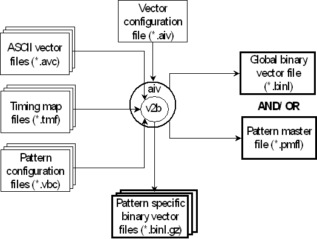

Vector Translation
A vector translation creates binary vector files for individual patterns, and also a global vector file containing the vector setup for all patterns of an aiv run. Its main inputs include:
- the ASCII vector files, which contain the ASCII vectors
- the timing map files, which define the translation rules for the conversion from state characters into physical waveform DC/DC power units
- and the vector configuration file, which controls the operation of the high level tool aiv.
The following figure gives an overview of the input and output of a vector translation:

The ASCII vector files are pattern-specific (in contrast, the ASCII timing file is pattern-independent). They are not created by the ASCII interface and must be supplied by the user. The timing map files are generated automatically by the timing translation.
Besides the ASCII vector files and the timing map files, you can also specify a pattern configuration file for every pattern. The pattern configuration files map ASCII device cycles to timing sets. This mapping controls the automatic insertion of CTIM instructions into the sequencer program of the pattern (see Controlling the Automatic Insertion of CTIM Instructions). The pattern configuration files are also generated automatically by the timing translation.
If you use the vector translation without the timing translation, you must supply the timing map files and pattern configuration files too. Furthermore, the vector translation, like the timing translation, requires a pin configuration file (not shown in the figure).
This section is basically organized by input file type. Features extending across more than one of the input files are described in separate sections.